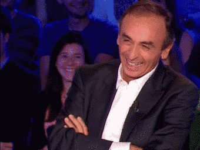

Présentation de l'équipe "MDR"
MDR est bien plus qu'une simple équipe d'esport, c'est une fraternité de joueurs passionnés unis par une quête commune : repousser les limites du possible dans l'univers de CS2.
Chacun de nos membres apporte son propre style de jeu, sa stratégie unique et une détermination inébranlable sur le champ de bataille virtuel.
Notre force réside dans notre capacité à anticiper les mouvements adverses, à coordonner nos attaques et à faire preuve d'une précision chirurgicale.
